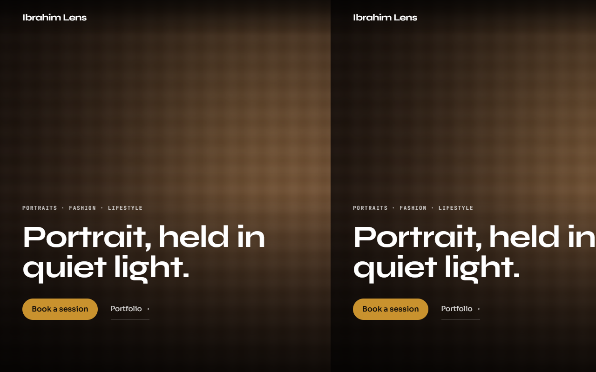
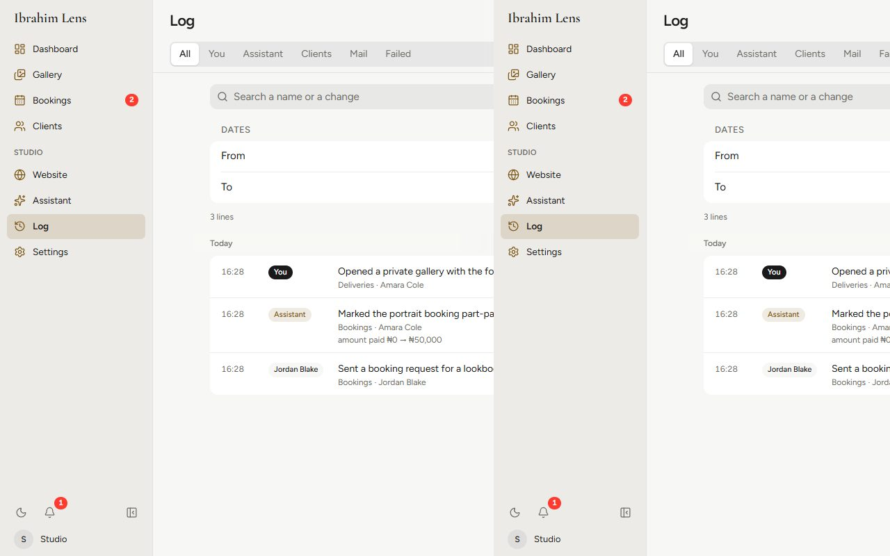
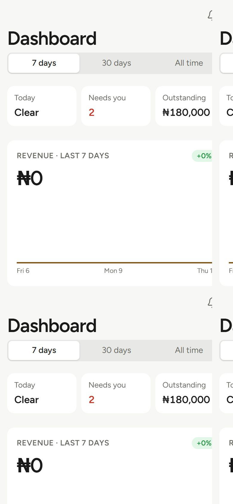
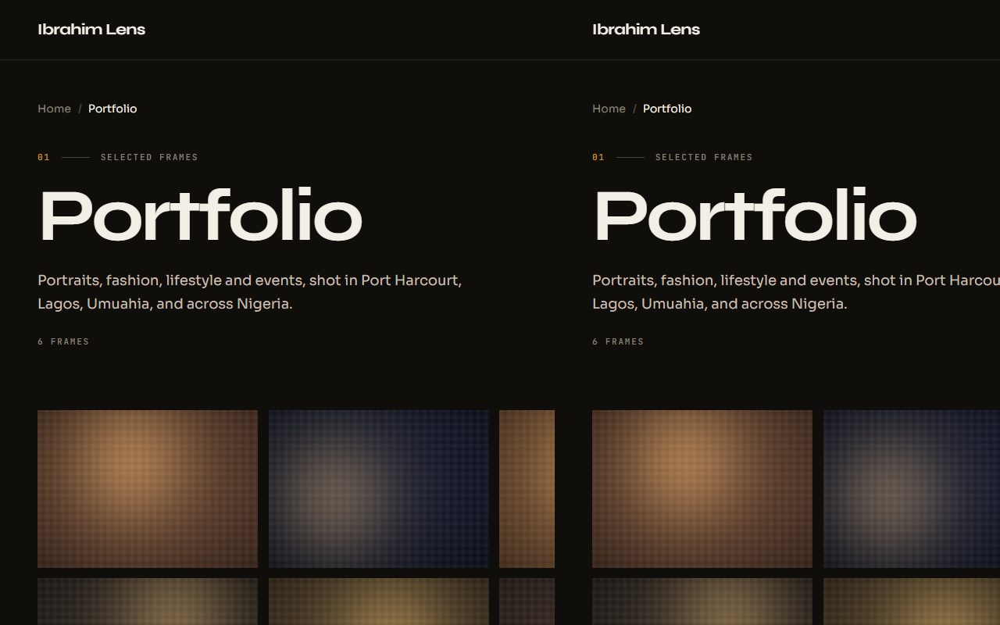
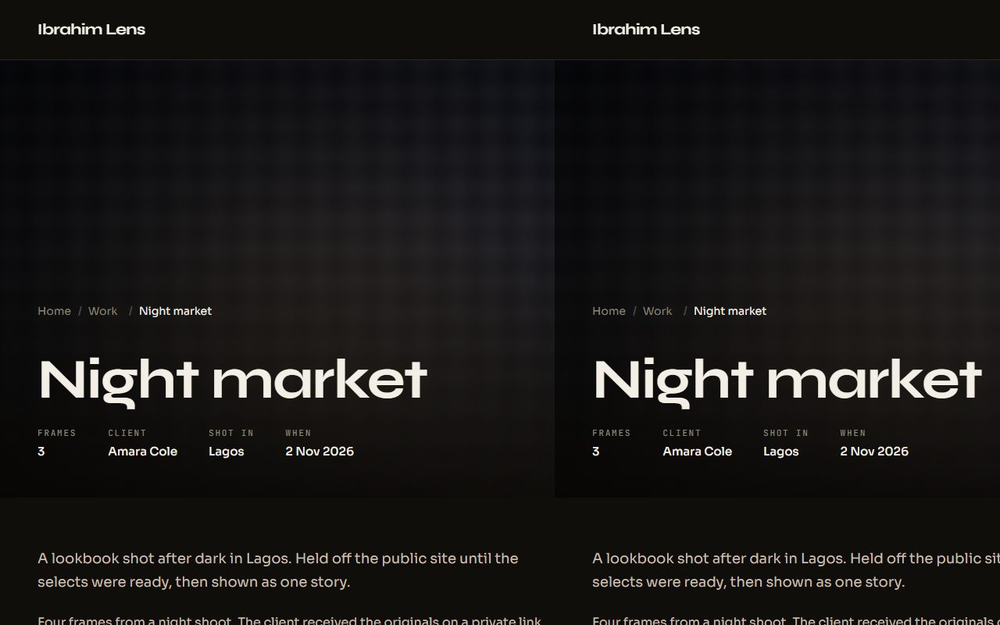

A case study by PrinceGOdsplan
One desk for a one-person studio.
Ibrahim Lens is a photographer who was running his business in pieces. Inquiries sat in one place, dates in another, balances in a notebook, and the pictures in a folder he had to send by hand. The public site was a thing someone else had to change for him.
I built him one desk. It holds who wrote, who is booked, the fee, what has been paid, whose pictures those are, and what the public site says. He does it on his phone. The public pages are the shop window. Studio is the room behind the counter.
The live site is ibrahimlens.com.ng. The screens on this page are a local copy filled with fictional clients and photographs I generated for the demo. Amara Cole and Jordan Blake are not his clients.

The model talks. The executor acts.
He needed to say “mark Amara paid fifty thousand and send her the portraits” and have the books and the gallery change. A chat box that only answers is a toy on a desk that has to move money and files. A chat box that writes the database itself is worse: one loose sentence can book the wrong person or delete a set.
So the model never writes. It reads, it searches the log, and it hands over one job. The job is a title plus an ordered list of steps, and the steps name people, not record ids. A separate executor resolves the names, writes through the same authenticated path the buttons use, and reports each step on a card: done, waiting, needs a detail, or failed. If a name matches two people, it stops and asks. It does not guess.
A delete waits for a yes on that card. The yes goes to the executor, not back through the model. The same job, inside a minute, is not run twice. The thread is one conversation: a short summary, then the last twelve turns. Questions go to a cheaper model. A change goes to a stronger one. The screen shows neither the model name nor a token meter.
The card is where a step can stop. If a step needs a detail, the card asks and waits. If a step fails, it says failed, and the steps after it do not report themselves as done. He can open the same card tomorrow. The thread is one record on the server. A refresh loads that record. It does not open a second conversation next to the first.
Sending the photos to the model would have been shorter. The files stay in the picker and in PocketBase. The model receives the names, never the bytes.

The log is written in the same request as the change.
A desk you cannot reconstruct is a desk you cannot trust. Every change that matters writes a line in the same request: who, which part of the desk, what happened, and the before and after. A payment shows as naira, ₦0 to ₦50,000, not as two raw numbers in a debug table.
The line names the actor. He did it. The assistant did it. A client sent the booking. The system noted it. The assistant’s line is the same shape as his, because the executor uses the same write path. If the write fails, the log does not claim it succeeded.
The line is written in the request that saved the record. A crash between a save and a later log call cannot leave a payment with no history, or a history of a payment that never landed. The summary is a sentence he can read. When a number changed, the old value and the new one sit under that sentence. The log is not a dump of every field on the row.
A second “activity” table would have drifted from the first within a month. One log, written beside the change, is the record he opens on the phone.

A delivery is a private gallery, not a public page.
The pictures he sells are not the pictures on the website. A client gets a link with a token. The page loads only when that token matches a delivery that has not been revoked and has not expired. There is no account to create and no password to remember. The link is the key, and the key dies on a date.
On that page the client can download the frames and leave a line of feedback. A line he likes can become a testimonial later. It does not appear on the public site by itself. Publishing a quote is a separate act, done from the desk.
The demo gallery is four frames and one link. Download all is the set. Download original is one frame. The clock is the expiry on the record, so when the date passes the same link stops resolving. I do not take the page down by hand. Revoking the delivery from the desk closes it earlier. The page is not in the public menu. You have the link, or you do not.
Posting the set to the portfolio would have been one toggle. A paid set and a public set are different decisions, so the delivery never flips the public flag.

Studio is the app. The website is not.
He answers inquiries between jobs, often standing up, often on a phone. Studio had to be usable there: who needs a reply, who still owes, and what is about to happen. The dashboard is that list. Outstanding on this demo is ₦180,000, Amara’s remaining ₦100,000 plus Jordan’s ₦80,000, both unpaid in the bookings view.
Needs you is that short list: a booking waiting on a reply, a balance still open. A year chart would have looked like software and told him nothing on a Tuesday, so the dashboard stays a list. The phone frame is the same dashboard at 390 pixels wide, stacked. There is no second app.
The public site stays a site. It has no login and no dashboard. A visitor downloads the pages they came for. Studio is a route he opens when he is signed in, and the PIN, when he sets one, sits in front of that route on a shared phone.


One upload. Four places it can go.
A frame enters once. After that it can sit in the library, go on the portfolio, become the cover of a work story, or go into a private delivery. Four copies on disk would mean four files to replace when he picks a better crop. One file, and a record of where it is allowed to show, means the public site, the story, and the client gallery are views over the same library.
The portfolio is a public rule: a frame is on the site when it is marked for the portfolio and it lives in the portfolio room, not in a private pile. A work story is public when he says the story is on the website. The home slideshow points at frames by id. Remove a frame and the slide goes with it. The page copy holds no second list of image URLs.
He edits the public words from Studio. A line on the home page, a story taken off the site, a frame moved into the portfolio: those are records, and the site reads them. A caption does not wait on a deploy. A code change still does.
The booking form is the public door into the same records. A request creates a person and a booking. It shows up on the desk as unpaid until he sets the fee and the amount paid. Jordan’s lookbook is ₦80,000 and unpaid. Amara’s portraits are ₦150,000 with ₦50,000 in. The contact on the demo is a fake inbox. The live number never appears here.





Two products, one codebase.
The public site and Studio are route groups in one Vite app. A visitor hits the public routes and never downloads Studio. The delivery page is its own route, gated by the token. Studio sits behind sign-in.
They do not share a skin. The public pages are a warm dark, set in Syne and Sora, with brass only on Book. Studio is a light tool desk, with a night option he can turn on. Mixing the two would have made both look like a theme. They are different jobs, so they look like different jobs.
I wrote the specs and the task list before I built, so the collections and the screens had names before the components did. Those notes stay with the code. This repo is the write-up.
PocketBase holds the accounts, the records, and the files. That is the API and the file store. Public rules decide what a stranger can read. Studio rules decide what a signed-in user can write. The browser talks to PocketBase for those records. A custom API in front of every screen would have been a second product to keep alive. In production the site is a static build, and PocketBase sits behind Caddy. Locally I run both.
The stack is React, Vite, TypeScript, Tailwind, PocketBase, Docker, and Caddy. That is the list.